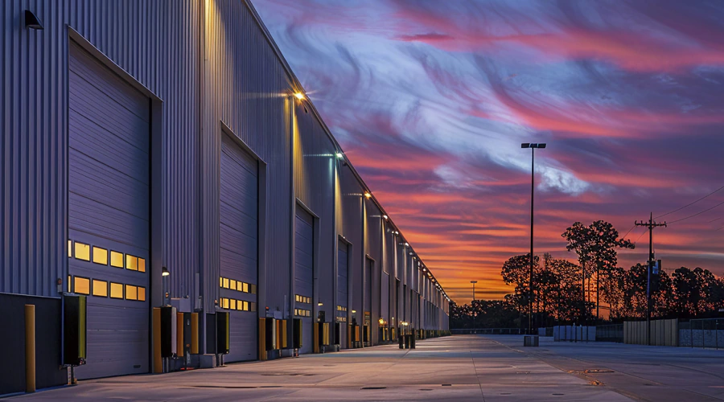
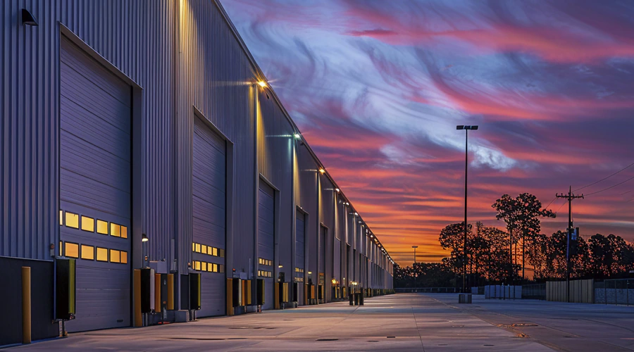
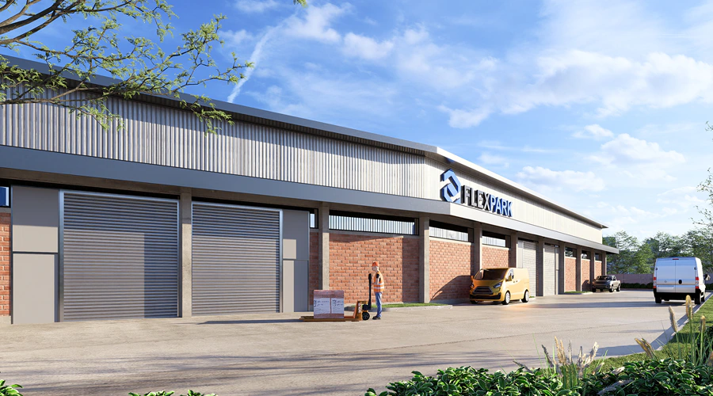
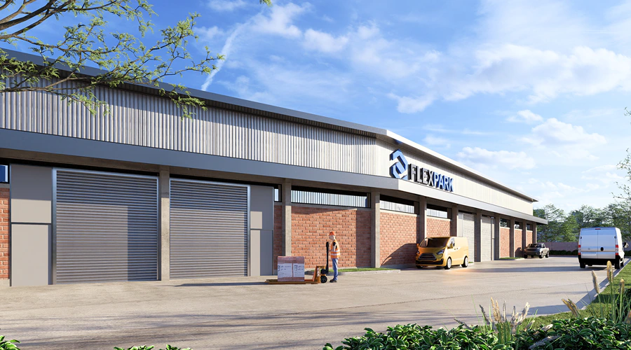
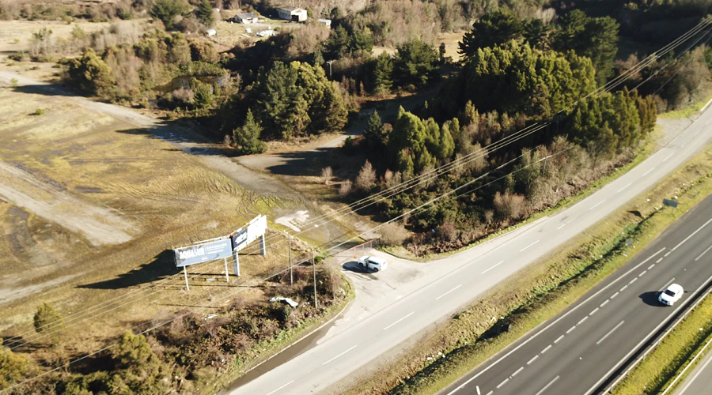
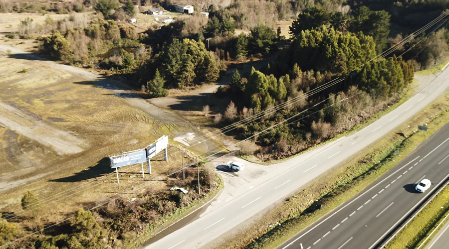
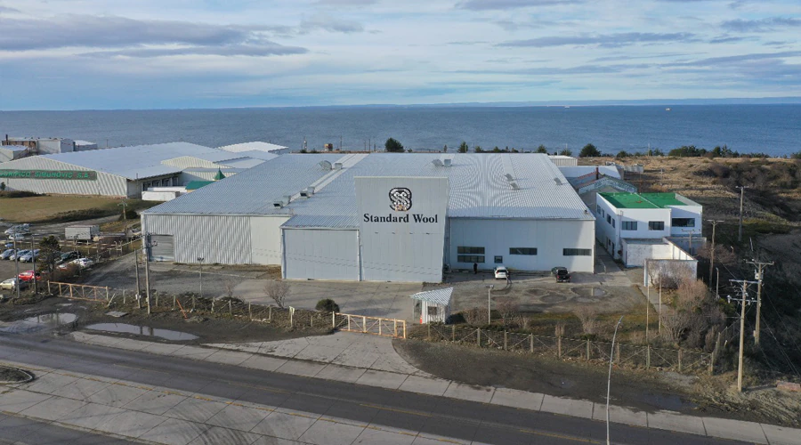
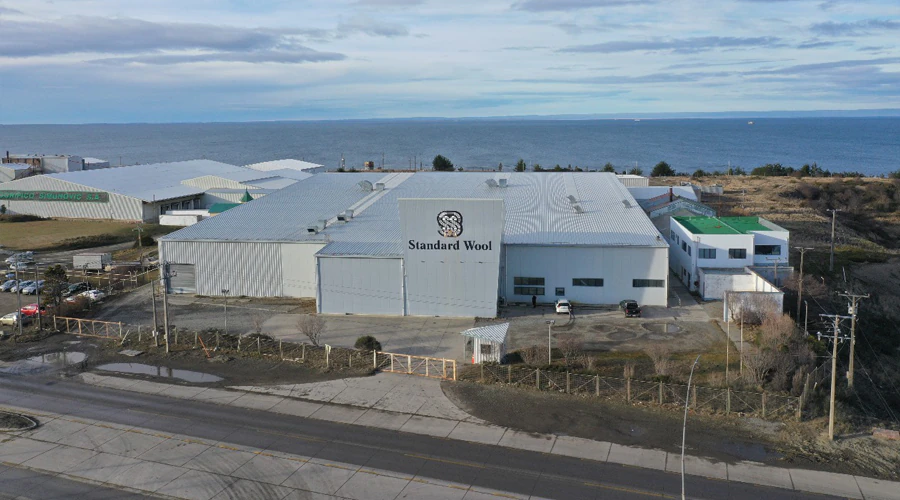

En Flexpark operamos condominios de bodegas diseñados para que empresas de distintos tamaños puedan operar dentro de un mismo recinto. Nuestros centros están compuestos por grandes galpones que se subdividen en bodegas independientes desde 40 m², lo que permite flexibilidad para crecer y operar con seguridad en un condominio con servicios compartidos.


Ubicación privililegiada en el acceso norte de Copiapó, con conexión directa a la Ruta 5 Norte, Flexpark Copiapó se proyecta como un nuevo polo logístico de alto estándar para la Región de Atacama, emplazado en un terreno de 30.000 m² y con una superficie construida proyectada de 12.700 m².
El proyecto contempla bodegas flexibles y logísticas, con alturas libres de 6,5 metros al hombro y 8 metros en cumbrera, patios de maniobra, cortinas de enrollar, aislación térmica, sistemas contra incendio certificados y seguridad 24/7.
Gracias a su ubicación estratégica, a solo 5 minutos del acceso norte de la ciudad y con conexión expedita hacia el aeropuerto y el puerto de Caldera, Flexpark es una solución ideal de arriendo de bodegas en Copiapó para empresas vinculadas a la minería, energías renovables, consumo masivo y logística regional que buscan acompañar el crecimiento económico de la zona.
Ubicado en el sector El Salto de la comuna de Recoleta, con conexión directa a Autopista Vespucio Norte, Flexpark Recoleta se posiciona como una solución estratégica de bodegaje urbano en una ubicación central y altamente demandada del Gran Santiago.
El proyecto se encuentra en plena operación y corresponde a un centro boutique de aproximadamente 1.400 m² de GLA, que ofrece arriendo de bodegas flex desde 10 hasta 250 m², orientadas a almacenaje general y operaciones de última milla. Su cercanía inmediata a Vitacura, Providencia y Ciudad Empresarial de Huechuraba, junto con su excelente conectividad vial hacia los principales polos logísticos de la ciudad, lo convierten en una alternativa ideal para empresas que requieren proximidad a sus mercados, rapidez operativa y eficiencia en distribución urbana.
Emplazado en un punto estratégico de la comuna de Cerrillos, en el triángulo formado por Autopista Vespucio Sur, General Velásquez y Camino Lonquén, Flexpark Cerrillos destaca por su ubicación privilegiada a pasos de Mallplaza Oeste y con accesos directos a los principales ejes logísticos del sector surponiente de Santiago.
El centro se encuentra en operación y cuenta con más de 11.400 m² construidos, ofreciendo maxibodegas y bodegas flex desde 40 hasta 1.800 m², con infraestructura de alto estándar que incluye patios de maniobra, sector de andenes de carga, sistemas contra incendio certificados y seguridad 24/7.
Su localización y la escasa oferta comparable en la zona lo han posicionado como una alternativa altamente valorada para operaciones de almacenaje general y última milla. Es una gran opción de arriendo de bodegas para operadores de Cerrillos, Lo Espejo, Maipú, San Bernardo y sus alrededores que buscan mejorar su estándar y conectividad.
Emplazado en una ubicación inmejorable en el acceso norte de Puerto Montt, en primera línea frente a la Ruta 5 Sur, Flexpark Puerto Montt se desarrolla sobre un terreno de 100.000 m² y contempla un GLA proyectado de 51.885 m², consolidándose como uno de los principales parques logísticos del sur de Chile.
El proyecto considera arriendo de bodegas flex, logísticas y soluciones Built to Suit, con amplias circulaciones, patios de maniobra y sistemas contra incendio certificados, diseñadas para grandes centros de distribución regionales. Su cercanía a Puerto Montt y Puerto Varas, junto con su capacidad para desarrollar infraestructura especializada, como cámaras de refrigeración y congelado, lo convierten en una plataforma ideal para la industria del salmón, alimentos y logística regional.
Ubicado estratégicamente en la Ruta 9 Norte, a solo 7 minutos del aeropuerto y del acceso norte a la ciudad, Flexpark Punta Arenas se posiciona como un centro logístico clave para la Región de Magallanes. El proyecto cuenta actualmente con 11.550 m² construidos y una ampliación en desarrollo que permitirá alcanzar un total de 15.500 m², ofreciendo arriendo de bodegas flex, logísticas y soluciones Built to Suit con alturas libres de hasta 9 metros, patios de maniobra y sistemas contra incendio certificados. Su ubicación fuera del radio urbano representa una ventaja competitiva relevante frente a las crecientes restricciones al tránsito de camiones con remolque, consolidándolo como una solución eficiente para operaciones logísticas, energéticas, antárticas y de servicios al extremo sur del país.
 

 


 

 

{kind=link}
{kind=link}
{kind=link}
{kind=link}
{kind=link}
{kind=link}